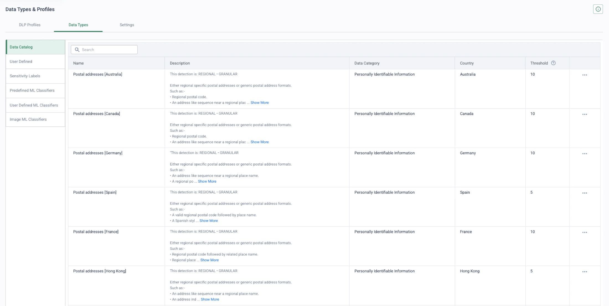
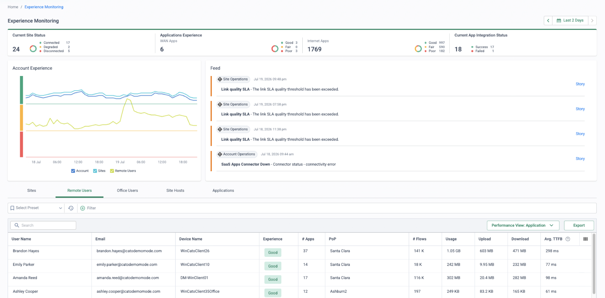
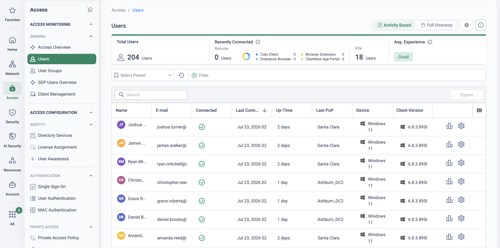

Why this matters
This plan is authored from Netskope and Cato documentation plus the Cato PS migration methodology — not from a completed, referenceable Netskope migration. Validate it with Cato Professional Services before using it with a customer, especially the DLP/EDM rebuild scope and the current SaaS Security API connector list.
The migration case against Netskope is architectural, not feature-led. Netskope built an excellent SSE and bolted SD-WAN on via the Infiot acquisition (2022): full SASE means SASE Gateway appliances at sites feeding the NewEdge security cloud — two dataplanes stitched together. Cato runs SD-WAN, SWG, CASB, DLP, ZTNA and FWaaS as one converged single-pass cloud engine with thin Socket edges, one policy model and no steering layer to design.
The second lever is steering complexity. A mature Netskope estate steers traffic five different ways, each with its own configuration, exception lists and failure modes. On Cato there are two: Socket for sites, Client for users. No PAC files, no explicit proxy, no proxy chaining, no steering configuration to maintain.
Be honest in the room: Netskope's data-protection stack is its crown jewel, and NewEdge performance is good — customers rarely leave over PoP latency. Reviewer-sourced friction is about cost and deployment complexity (PeerSpot reviewers cite complex setup and pricing "high compared to competitors"; third-party reviews note DLP/CASB/ZTNA tuning can take months). Win on convergence, WAN transformation, operational simplicity and total cost — neutralise on data-protection features, don't try to out-feature them (see gotchas).
“Which steering mechanisms are actually live in your Netskope tenant today — Client, PAC/explicit proxy, IPsec/GRE tunnels, proxy chaining — and who owns the exception lists?” Each mechanism is a separate cutover cohort with its own rollback lever, and years of steering exceptions encode operational knowledge you want to inherit, not rediscover.
What maps to what
Every inline Netskope function has a Cato home in the single-pass engine — the differences that matter are in the notes column. Three carry real migration work: DLP profiles are rebuilt, not imported (EDM datasets from source data); API-CASB coverage must be verified app-by-app; and NPA's Publisher model is replaced by routed reachability, which changes the private-access design rather than translating it.
| Netskope component | Cato equivalent | Migration note |
|---|---|---|
| NG-SWG (real-time protection policies for web) | Internet Firewall + Threat Prevention | Categories and app awareness in one rulebase; actions Allow / Block / Prompt |
| CASB inline (app / activity / instance policies) | CASB — Application Control policy | Granular app/activity rules with tenant awareness; requires TLS inspection |
| App-instance / tenant steering | Tenant Restrictions policy | HTTP header injection; M365, Google Workspace, Slack, Dropbox documented |
| API Data Protection (API-CASB) | Cato SaaS Security API | Documented connectors centre on M365 (SharePoint, OneDrive, Exchange). Netskope's app coverage is broader — verify the customer's app list before cutover; retain Netskope API-CASB in the interim if there's a gap |
| DLP profiles (EDM, fingerprinting, OCR, ML classifiers) | DLP — Data Control policy | 350+ data types plus custom regex/keyword/label types, EDM, IDM, OCR. Profiles are rebuilt, not imported; EDM datasets must be regenerated from source systems; OCR does not apply to EDM profiles |
| NPA (Publishers + private app definitions) | ZTNA/SDP: Cato Client → PoP → WAN Firewall | No per-enclave connectors — apps are reachable via the site Socket/vSocket; Browser Access portal covers clientless/unmanaged access |
| Netskope Client + steering configuration | Cato Client | One agent, one tunnel, no steering-config/PAC layer; rebuild only proven cert-pinned exceptions |
| Cloud Explicit Proxy / PAC / proxy chaining | Not required | Socket (sites) or Client (users) steering; plan proxy-setting cleanup via GPO/MDM at cutover |
| Cloud Firewall (FWaaS) | Internet Firewall — all ports/protocols | Same rulebase as the web policy, not a separate product |
| RBI (risky / uncategorised sites) | Cato RBI (Authentic8-powered) | Distinct licence line item — confirm it's on the bill of materials |
| Cloud Confidence Index (0–100, 85k+ apps) | App Catalog risk score (0–10, ACE) | Rules migrate cleanly by category/risk band; audit any policy pinned to specific CCI scores |
| Coaching / notification templates | Prompt action (Internet Firewall) | Warn-and-continue only — no written-justification capture; set expectations honestly |
| Borderless SD-WAN / SASE Gateway appliances | Cato Socket / vSocket | Zero-touch thin edges; policy lives in the cloud |
| IPsec/GRE tunnels into NewEdge | Socket site (preferred) or IPsec IKEv2 site (interim) | Legacy firewalls can tunnel to a Cato PoP as a stepping stone before Sockets ship |
| IdP / SCIM provisioning | Cato SCIM — Entra ID, Okta, OneLogin | Both platforms provision independently from one IdP — stand Cato up in parallel |
Five phases, cohort by cohort
Anchored to the Cato PS methodology (Discover & Design → Pilot, Build & Initial Rollout → Advanced Security & Rollout → Tune & Optimise) and the PS competitor-migration policy pattern: Export → Review & Map → Deploy → Optimise. The unit of migration is the cohort — a steering population (Client users, PAC users, a tunnelled site) that cuts over and rolls back as one.
-
Discover & design — export the estate, map it, plan the cohorts
Inventory the tenant via the console and REST API v2 — the API exposes some but not all configuration, so expect manual export and screenshots for the rest: real-time protection policies, DLP profiles (flag which use EDM/fingerprinting/OCR), steering configurations and exception lists, PAC/explicit-proxy usage, IPsec/GRE tunnel inventory, Cloud Firewall rules, NPA app definitions and Publisher placement, tenant restrictions, notification templates, API Data Protection scope, SIEM feeds and the IdP/SCIM source.
Classify every user and site into a steering cohort, map policies to Cato constructs (per the table above — refactor to Cato best practice, don't lift-and-shift), design TLS inspection seeded from Netskope's SSL bypass list, and stand up Cato SCIM alongside Netskope's from the same IdP. Begin rebuilding EDM datasets from the original source systems — they cannot be exported from Netskope.
-
Pilot — sockets and DC/vSockets first, then swap the client per cohort
Security → TLS Inspection Access → Client Connectivity Policy
Deploy Sockets at pilot sites and the datacentre/cloud vSockets early, so private apps are on-net before any user migrates — this is what removes the need for Publisher-style connectors. Start policy from the Default Recommended CASB/DLP policy and layer the mapped rules on top, DLP in monitor mode.
For the pilot user cohort: uninstall the Netskope Client and install the Cato Client in the same maintenance window via Intune/JAMF/SCCM, enforce Client Connectivity Policy and posture checks, and validate internet egress, private-app access (replacing NPA paths), tenant controls and SIEM flow. Stand up the Browser Access portal for today's NPA browser-access and unmanaged-device population.
-
Rollout — staged TLS inspection, wave cutover, NPA retirement per app group
Security → WAN Firewall
Enable TLS inspection in planned stages (PS runs TLSi as phases 1–4 across the rollout) and move DLP from monitor to block per profile as false positives are tuned. Cut user cohorts (SDP migration groups) over in scheduled waves with posture analysis between them. Replace site IPsec/GRE-to-NewEdge with Sockets wave by wave — a site can run the legacy tunnel for not-yet-migrated VLANs while the Socket takes the migrated ones, or ride Cato as an IPsec IKEv2 site until its Socket ships.
Retire NPA per app group: once an app's site or VPC is behind a Socket/vSocket and its WAN Firewall and posture rules pass acceptance, retire the matching NPA app definition. Remove a Publisher only when every app it fronts has moved.
-
Co-exist at the network and API layers only — never on the endpoint
Sites can run Netskope tunnels and Cato Sockets side by side on separate VLANs and cohorts indefinitely. Netskope API Data Protection keeps scanning SaaS data at rest throughout the inline migration — it is out-of-band and conflict-free, so keep it licensed until Cato SaaS Security API coverage is confirmed for the customer's full app list. The endpoint is the exception: swap, don't overlap (see below). PAC/explicit-proxy users are the lowest-risk cohort — their cutover is a proxy-setting change — so stage them early as the pilot.
-
Tune & decommission in order — API-CASB last
Monitor → Events
Event analysis, rule tightening, removal of temporary bypasses, bandwidth/QoS tuning. Then wind Netskope down in dependency order: inline SWG/CASB cohorts → Cloud Firewall tunnels → NPA and Publishers → API Data Protection last → steering artefacts (PAC files, proxy GPOs, tunnel configs) → tenant and licence termination. Keep the Netskope tenant licensed until the final wave signs off — negotiate that overlap window commercially up front.
Swap the client, overlap the network
Both agents want to own the device's traffic. Netskope's own interoperability guidance shows the failure mode when another full tunnel is present: the Netskope Client tunnels inside the other VPN, the path degrades and inspection value drops. On the Cato side, running the Cato Client in full-tunnel mode alongside a third-party VPN is not recommended — and on macOS the Cato Client cannot run alongside another connected VPN profile at all. So the endpoint move is replace, not coexist: per cohort, uninstall one client and install the other in the same window. If a short overlap is unavoidable, add Cato PoP/SSO destinations to the Netskope steering exceptions and keep the Cato Client disconnected until its cutover moment.
Rollback levers, per cohort
Client users — redeploy the Netskope Client
Keep the MDM package (Intune/JAMF/SCCM) and the steering configuration live until the wave is signed off; rollback is a push, not a project.
Explicit-proxy users — revert the PAC
Roll back the PAC file or proxy GPO. The easiest cohort in both directions — which is exactly why they pilot first.
Sites — re-point the tunnel
The firewall's IPsec/GRE tunnel to NewEdge stays configured (or the site rides a Cato IPsec IKEv2 interim); re-point the default route to fall back.
Private apps — dormant NPA Publishers
Leave Publishers and app definitions in place, disabled or scoped down, until each app group passes acceptance on Cato. Identity rolls back for free — both SCIM apps provision independently from the IdP.
Keep the Netskope tenant licensed until the final wave completes — and negotiate that overlap window up front, not mid-migration when the renewal date becomes leverage against you.
Where to be careful — and honest
Netskope's data-protection stack is its crown jewel. Win on platform convergence and operations; neutralise on features — the pilot's job is to prove equivalence on the customer's own traffic, not on datasheet counts.
DLP fidelity gap — real, but usually narrower than it looks
Netskope advertises 3,000+ identifiers, 26+ ML classifiers and EDM/fingerprinting/OCR across 2,100+ file types; Cato offers 350+ data types plus custom types, EDM, IDM and OCR — but OCR does not apply to EDM profiles. In discovery, list the DLP rules actually firing (most estates enforce a small subset of what's licensed), rebuild EDM datasets from source systems, and run monitor-mode side-by-side in the pilot to compare hit parity.
API-CASB breadth
Netskope API Data Protection covers a wide sanctioned-app set; Cato's documented SaaS Security API connectors centre on Microsoft 365 (SharePoint, OneDrive, Exchange). If the customer scans Google Workspace, Box or Salesforce at rest, check the current Cato connector list at proposal time — and if there's a gap, retain Netskope API-CASB for those apps in the interim (it coexists cleanly) or scope the requirement honestly.
User coaching depth
Netskope's notification templates support justification capture, false-positive reporting and rich branding. Cato's equivalent is the Prompt action — warn-and-continue, requiring the Cato certificate on endpoints. If written-justification workflows are a hard requirement, set expectations and explore compensating controls (event follow-up in the CMA/SIEM). Do not claim parity.
Instance & activity granularity
Netskope's inline CASB can key policies on app instance and fine-grained activities. Cato provides granular Application Control rules, tenant awareness and header-injection Tenant Restrictions — validate the customer's specific app/activity/instance matrix app-by-app during the pilot rather than asserting blanket equivalence.
Steering-exception archaeology
Years of Netskope steering exceptions — cert-pinned apps, VPN gateways, problem SaaS — encode real operational knowledge. Mine that list to seed Cato's TLS-inspection bypasses and Client split-tunnel exclusions instead of rediscovering the failures in production. The SSL bypass list is the single best import.
NPA specifics
Publisher DNS behaviour (private DNS resolved via Publishers) must be re-provided by site-level DNS design on Cato; NPA's L3 client-to-client and server-to-client modes need explicit design review. Cato's routed WAN generally makes these simpler, not harder — but map them, don't assume.
App risk-rating depth
CCI rates 85,000+ apps on 50+ attributes; Cato's App Catalog scores 0–10 via the Application Credibility Engine and is overridable per account. Rules migrate cleanly by category or risk band — but audit any policy pinned to specific CCI scores.
RBI licensing
Netskope bundles RBI for risky/uncategorised sites with certain NG-SWG tiers; Cato RBI is a distinct Authentic8-powered service. Check the bill of materials so isolation use-cases don't silently drop out of scope.
Don't over-claim “single console” — Netskope One presents SSE and SD-WAN in one console with one policy framework per its own materials. And don't attack NewEdge performance — reviewers rarely leave over latency. The differential is the converged single-pass dataplane and one policy model across WAN, internet, remote and cloud — plus removing the appliance, Publisher and PAC scaffolding — not console counting.
How to prove it in the customer's tenant
A Netskope displacement is too big to PoV whole — so don't try. The pilot that de-risks the decision is a bounded swap: one cohort of users moved from the Netskope Client to the Cato Client, the firing subset of their SWG/CASB policy proven at verdict parity on their real traffic, one DLP profile slice rebuilt from source and matched in monitor mode, and two or three named private apps served by Cato ZTNA instead of NPA — with Netskope left authoritative for everyone else and a rollback that is literally a client push. The migration programme above stages PAC users first because they are cheap to move; the pilot deliberately takes a client-steered cohort, because the client swap is the decision the customer is nervous about. Run it under the discipline of the PoV framework: agree the success criteria below before anything is configured, and book the decision meeting the same day.
Success criteria
Every row's artefact goes into a dated evidence pack, exported as it lands — the wrap-up reads the pack, not memories.
| Success criterion | Evidence artefact | Where it lives |
|---|---|---|
| Every pilot user connects through the Cato Client with the Netskope Client removed, and is identified by name — not as an unidentified user | Connected cohort list with device, Client version and PoP | Access → Users · Monitor → Experience Monitoring |
| SWG/CASB verdict parity — the agreed test list of blocked, prompted and tenant-restricted actions returns the same verdicts on Cato as Netskope Real-time Protection returned for the same users | Side-by-side policy-hit events: Cato event export next to the matching Netskope log lines | Monitor → Events · Monitor → Cloud Apps Dashboard |
| DLP slice parity — one agreed profile, rebuilt from the customer's source data, hits the same test payloads in monitor mode that the Netskope profile hits today | Data Control events per test payload, attributed to user, app and matched data type | Monitor → Events · Monitor → Data Protection Dashboard |
| NPA replaced for named apps — the two or three agreed private apps are reached through the Cato Client and WAN Firewall, with the matching NPA paths unused by the cohort | WAN Firewall allow events attributed to cohort users per app; NPA logs quiet for those app/user pairs | Monitor → Events · Security → WAN Firewall |
| No degradation — cohort experience scores hold steady across the pilot weeks and the cohort raises no more tickets than its pre-swap rate | Experience Monitoring per-user scores, swap week vs parity weeks, plus the helpdesk queue | Monitor → Experience Monitoring |
- Success criteria signed off and the decision meeting booked, per the PoV framework.
- Trial licences confirmed for every capability under test — CASB, DLP and TLS inspection if verdict and DLP parity are in scope.
- IdP integration connected, with a dedicated pilot group provisioned over SCIM alongside Netskope's (both provision independently) and visibly syncing before any rule references it.
- TLS inspection staged first for the cohort — certificate out, bypasses in, then inspection (see TLS Inspection: Staged Rollout Playbook). Without it, CASB activity, tenant and DLP verdicts cannot reach parity.
- The named private apps' site or VPC behind a Socket/vSocket before any user swaps — routed reachability is what replaces the NPA Publisher, and it must exist first.
- Scope is one client-steered cohort of 10–25 users plus the named apps. Site tunnels, the wider NPA estate and API Data Protection stay untouched — the API layer keeps scanning throughout, exactly as the co-existence model above prescribes.
- The Netskope Client MDM package and steering configuration stay live for the whole pilot — that package is the rollback.
Configuration walkthrough
-
Pick the cohort and capture the reference baseline
Access → Users
Provision the pilot IdP group, confirm SCIM has synced it, and export the parity reference while the cohort is still on Netskope: the Real-time Protection and DLP events for these users over a normal week, plus their helpdesk ticket rate. Every later claim is judged against this export. Agree the test list now — the blocked and prompted categories, the tenant-restricted app, the DLP test payloads, the named private apps.
-
Put the named private apps on-net and write their ZTNA rules
Security → WAN Firewall Access → Client Connectivity Policy
With the apps' site or VPC behind a Socket/vSocket, add WAN Firewall rules allowing the pilot group to each named app — the WAN Firewall is an allowlist ending in an implicit any-any block, so only what you write is reachable, which is the ZTNA posture NPA users already expect. Gate the cohort with a Client Connectivity Policy rule scoped to the pilot group with a device posture profile — the Publisher's job done by routing plus policy. Leave the matching NPA app definitions in place and dormant: they are the private-app rollback.
-
Translate the pilot-scope web and CASB policy — monitor-first
Security → Internet Firewall Security → CASB
Recreate only the Real-time Protection rules the cohort actually hits, scoped to the pilot group as source. In the Internet Firewall (implicit final allow — the same default posture the cohort's web traffic has today), Block stays Block, User Alert becomes Prompt, and Track = Event on every rule — events are the evidence. Layer Application Control rules for the agreed app/activity pairs and a Tenant Restrictions rule (header injection) pinning the corporate tenant. Arm blocks only for the agreed test list; everything else runs as allow-plus-tracking until its events prove it. Full construct-by-construct mapping: Netskope Policy Migration.
-
Stage TLS inspection for the cohort only
Security → TLS Inspection
Deploy the Cato root certificate to cohort devices through GPO/MDM, then add an Inspect rule scoped to the pilot group. Seed the bypasses from Netskope's SSL do-not-decrypt list — it is the single best import in the whole estate — but rebuild deliberately: certificate-pinned applications must be bypass rules, and Cato bypasses Android, Linux and unidentified operating systems automatically, so don't port those entries at all.
-
Rebuild the DLP profile slice from source
Security → DLP Configuration
Take one profile the customer's Netskope estate actually fires — a PCI or PII profile is the usual pick — and rebuild it as a content profile from Cato's predefined data types, tuning thresholds to the Netskope profile's intent. If the slice includes exact-match data, regenerate the EDM dataset from the system of record — the upload is hashed in the browser before it reaches the Cato Cloud, and nothing exports from Netskope. Apply it in a Data Control rule scoped to the pilot group in monitor mode — allow with event tracking, nothing blocked — and remember OCR does not apply to EDM profiles when choosing the slice.
-
Swap the cohort's client — Netskope off, Cato full tunnel on
Access → Split Tunnel Policy
The endpoint move is replace, not coexist — per the co-existence section above, the two clients never tunnel side by side. In one maintenance window per device wave, uninstall the Netskope Client through the same GPO/MDM channel that deployed it — retiring its steering configuration in the same change — and install the Cato Client. A Split Tunnel Policy rule scoped to the pilot group routes all traffic to Cato, so the cohort's internet, SaaS and private-app paths all land on the policy built in steps 2–5 while the rest of the estate stays exactly as it was.
-
Run the parity weeks and build the evidence pack
Monitor → Events
Walk the agreed test list with a cohort user: blocked categories, prompted categories, corporate-versus-personal tenant, each DLP test payload, each named private app. Filter Events to the pilot rules, confirm every verdict is attributed to the named user and rule, and export the filtered view as a dated CSV per criterion (a single export carries up to 250,000 events). Pair each Cato event with its matching Netskope log line from the step-1 reference, and close the pack with the cohort's Experience Monitoring scores — swap week against parity weeks.
What good output looks like





Troubleshooting the pilot
Two clients on one device
If a swapped device still shows the Netskope Client connected, the swap didn't complete — and per the co-existence section above the two full tunnels must never run together (on macOS the Cato Client cannot run alongside another connected VPN at all). Finish the removal before reading any parity events.
Steering remnants
A leftover PAC file, proxy GPO or steering profile keeps sending traffic to Netskope — or silently around Cato — after the agent is gone. Check proxy settings on the misbehaving device; retire steering artefacts in the same change window as the client swap, never afterwards.
SSL-pinning breakage
Apps Netskope quietly never decrypted start failing the moment TLSi inspects them. Certificate-pinned applications must be TLS bypass rules on Cato — rebuild the list from observed TLSi events, with the Netskope SSL bypass list as the map, not the config.
SaaS egress-IP allowlists
Tenants conditional-access-pinned to Netskope's egress ranges lock the cohort out the moment egress moves to the Cato PoP. Sweep M365 and other SaaS allowlists before the swap, and use Cato allocated IPs where a fixed source IP is required.
Cohort rules never match
SCIM sync lag means group-scoped rules silently never fire — the pilot looks broken when it's just early. Verify membership in Access → Users and prove one event attributes to a named pilot user before the parity weeks start.
Private app unreachable
Usually one of three: the app's site isn't actually behind the Socket/vSocket yet, the WAN Firewall's implicit block is doing its job because the allow rule doesn't match, or private DNS — which NPA resolved via Publishers — hasn't been re-provided by site-level DNS design. Events show which; fix in that order.
Gotchas & the exit plan
- Parity means intent, not identical counts. Category taxonomies and CCI-to-App-Catalog bands do not line up one-to-one — judge the agreed test list verdict by verdict, never by comparing event volumes.
- Coaching depth. Netskope User Alert rules land as Prompt — warn-and-continue, no written-justification capture. Keep justification workflows out of the pilot's pass/fail or agree compensating controls up front; do not let the wrap-up claim parity the page itself doesn't.
- The DLP slice is a slice. One profile proves the rebuild pattern and monitor-mode hit parity; the full profile estate — and every EDM dataset — is programme work with data owners, not a pilot deliverable.
- API Data Protection is out of scope by design. It keeps scanning data at rest throughout and is retired last, per the migration path above — nothing in this pilot touches it.
- Evidence windows. An Events query spans at most 31 days — export weekly as the framework prescribes, rather than reconstructing at wrap-up.
If the pilot passes, nothing is thrown away: the pilot rules are the first production cohort's policy, the pilot group simply widens, and the programme proceeds up this page's five phases. If it must unwind, revert the cohort in reverse order: redeploy the Netskope Client and its steering profile over the retained MDM package — rollback is a push, not a project, and verdicts return to Netskope immediately — then set the pilot's Internet Firewall, CASB and Data Control rules back to monitor and disable rather than delete them, because the conversion work remains an asset for the real migration. Re-enable the dormant NPA app definitions if the cohort still needs them; the TLSi root certificate is inert and can stay or go with the same tooling; the Socket/vSocket serving the named apps belongs to the wider transition and stays. The cohort lands exactly where it started: Netskope-steered, fully protected, decision de-risked.
Resources
Documentation
- What is Cato's ZTNA Solution (KB)
- How Cato Protects Sensitive Data with DLP (KB)
- Cato SaaS Security API — connector list (KB)
- TLS Inspection Configuration Wizard (KB)
- Preparing to Install the Cato Client — VPN co-existence limits (KB)
- How to Implement SASE — public checklist
- Netskope traffic steering (vendor docs)
- Netskope Client interoperability (vendor docs)